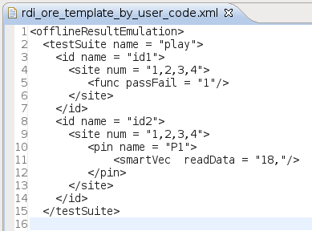
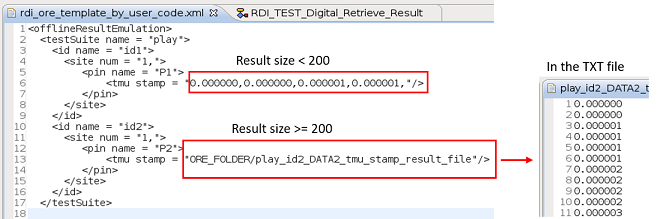

Template file from online test results
Starting from 7.5.2, SmartRDI allows you to generate an ORE template file from online test results.
If you set ORE_TEMPLATE_BY_USER_CODE = TRUE in the RDI_Configure file, SmartRDI can add real test results into the template file rdi_ore_template_by_user_code.xml.
RDI_BEGIN();
rdi.func("id1").label("abc")...;
rdi.smartVec("id2").pin("P1")...;
...
RDI_END();
-
All measurements with ID in the SmartRDI code are converted to ore result frames in the template file.
-
SmartRDI automatically fills the real active sites information in the template file.
-
SmartRDI automatically fills the real test result (only the first site result) in the template file.
If you are going to use this template, add </offlineResultEmulation> at the end of the rdi_ore_template_by_user_code.xml file.
You can also use ORE_FOLDER in the RDI_Configure file to specify a location for the rdi_ore_template_by_user_code.xml file. For more information, see RDI_Configure file.
Test results of all sites to the template file
<offlineResultEmulation>
<testSuite name = "offline_ORE">
<id name = "id">
<site num = "1">
<pin name = "DATA1">
<smartVec readData = "12,"/> // Site 1 real result
</pin>
</site>
</id>
<id name = "id">
<site num = "2">
<pin name = "DATA1">
<smartVec readData = "16,"/>
</pin>
</site>
</id>
</testSuite>ARRAY results in the template file
- If the result size is less than 200, SmartRDI inserts all the results to the XML file.
- If the result size is equal to or greater than 200, SmartRDI inserts all the results into a .txt file which is located in the same folder as the rdi_ore_template_by_user_code.xml. SmartRDI also adds the path information in the .xml file.
RDI_BEGIN();
rdi.tmu("id1").pin("P1").vth().sample(4)...;
rdi.tmu("id2").pin("P2").vth().sample(1024)...; // result size > 200
...
RDI_END();
For the .txt result file, its naming convention: testSuiteName_idString_pinName_className_resultType_result_file. For example, TestPlay_id1_DATA1_tmu_stamp_result_file.
SmartRDI offers a flag ORE_TEMPLATE_DATA_FILE_SIZE_THRESHOLD, which can be used in the RDI_Configure file to set a threshold of the result size. See ORE_TEMPLATE_DATA_FILE_SIZE_THRESHOLD for how to set the threshold.
Functional changes
- Introduced in SmartRDI 7.5.2
- SmartRDI 7.10.0: Real test results of all sites can be added to the template file.